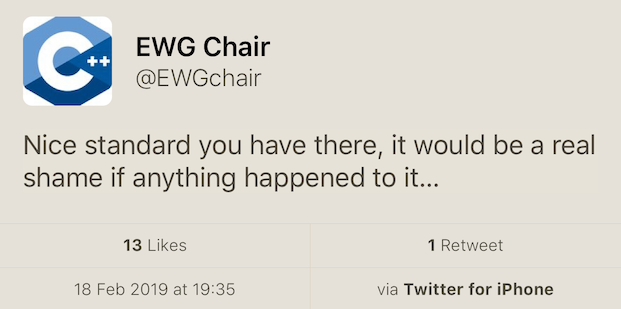
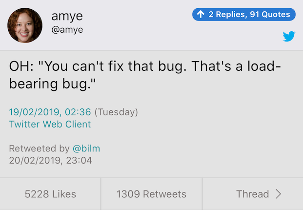

2019-02-28
https://www.reddit.com/r/cpp/comments/aq8rxf/bryce_lelbach_on_twitter_what_proposed_c20/

Reddit https://www.reddit.com/r/cpp/comments/au1skl/herbs_kona_trip_report_winter_iso_c_standards/
At our next meeting in July, we expect to formally adopt a few additional features that were design-approved at this meeting but didn’t complete full wording specification review this week <...> (formatting, flat_map etc.)
Bryce Lelbach:
TL;DR: C++20 may well be as big a release as C++11.
Pros:
Cons:
https://arne-mertz.de/2019/02/cpp-on-sea-2019-trip-report/
C++ On Sea is definitely the best conference I have ever been to.
The opener was titled “Hello, World”, there was a “main()” plenary hall and session rooms titled “const west”, “east const”, and “unsigned”. The latter was the smallest of the session rooms and had an overflow problem a few times, but luckily that did not lead to undefined behavior, because C++ conference attendees seem to be very nice people in general.
https://devblogs.microsoft.com/visualstudio/visual-studio-2019-release-candidate-rc-now-available/

